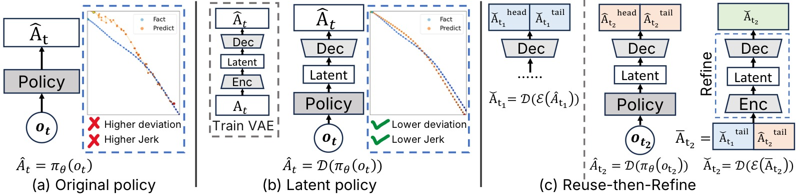
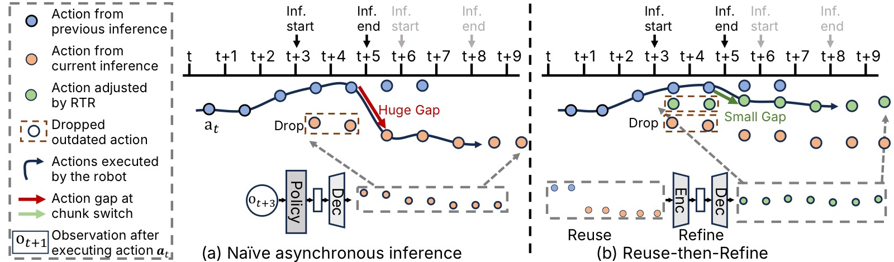
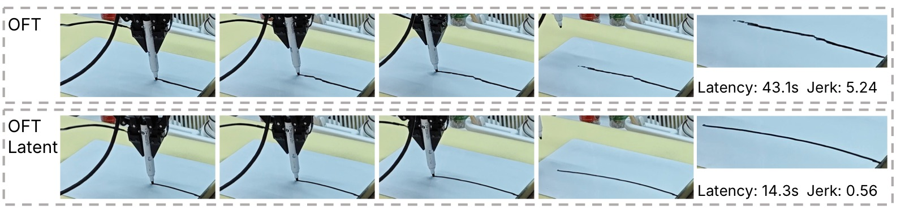
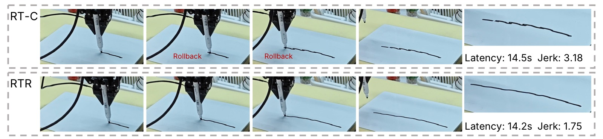
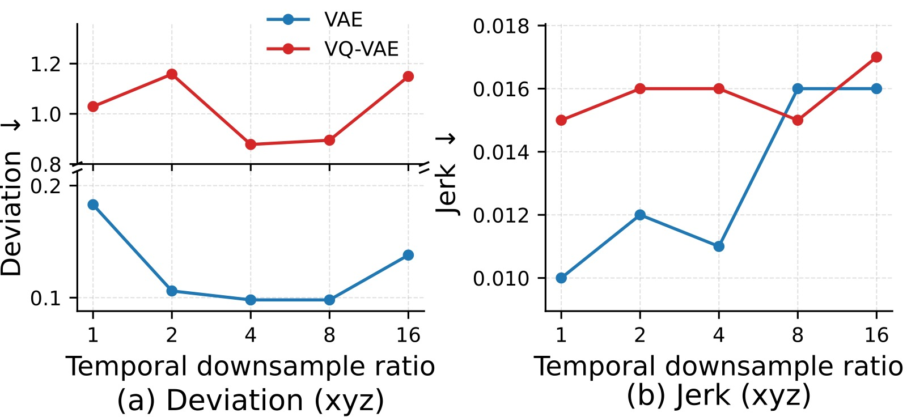

Learning High-Frequency Continuous Action Chunks in Latent Space
论文信息 - 作者：Kunyun Wang (SJTU, TARS), Yuhang Zheng (TARS, NUS), Yupeng Zheng (TARS, CASIA), Jieru Zhao (SJTU, corresponding), Wenchao Ding (TARS, Fudan, corresponding) - 通讯作者：Jieru Zhao (zhao-jieru@sjtu.edu.cn), Wenchao Ding (dingwenchao@fudan.edu.cn) - 投稿方向：ICML 2026 (accepted) - arXiv ID：2605.24931 - 代码：https://github.com/tars-robotics/RTR
一、核心问题
现代机器人模仿学习策略广泛采用 action chunking（动作分块预测）——策略一次预测未来 $H$ 步的动作序列，而非逐步预测。这在中等频率（如 15 Hz）下能改善时序一致性，但当动作频率提高到 60 Hz 时，直接在动作空间中学习变得极其困难：策略产生的动作块精度低且抖动剧烈（high jerk）。
然而，高频动作是值得追求的：高频动作保留了细粒度运动细节，隐式编码速度信息，使机器人能够连续执行而非反复启停（stop-and-go）。低频控制下每个动作指定一个远距离目标位姿，隐式强制执行零速度边界，导致反复加减速；高频控制则允许控制器保留非零速度穿越动作边界。
核心矛盾：高频动作使执行更丝滑，但使学习更困难。
二、核心思路 / 方法
论文提出两个互补的技术：
2.1 在 Latent Space 中学习高频动作
用 Variational Autoencoder (VAE) 将高频 action chunk 压缩到连续潜在空间，然后在潜在空间中训练策略。
具体流程：
- 训练 VAE：编码器 $\mathcal{E}$ 将高频率 action chunk $A_t \in \mathbb{R}^{H \times c}$ 映射到潜在表示 $z = \mathcal{E}(A_t)$，解码器 $\mathcal{D}$ 重构动作 $\hat{A}_t = \mathcal{D}(z)$
- 时序降采样：编码器以降采样因子 $f = H/h$ 压缩输入，产生 $z \in \mathbb{R}^{h \times d}$（$h$ 为潜在 horizon，$d$ 为潜在维度）
- 训练策略：将数据集中所有 action chunk 编码为 latent，策略学习从观测到 latent 的映射
- 推理时：策略预测 latent → VAE 解码器还原为高频率 action chunk
为什么有效？因为策略不再需要对每个高频率命令进行独立建模，而是预测紧凑的短时运动模式。VAE 编码器的时序降采样使每个 latent step 概括了多个相邻时间步的主要运动趋势，KL 正则化鼓励运动模式位于更平滑的潜在流形上。

图1：方法总览。(a) Original：策略直接在高频率动作空间中训练，产生的 action chunk 存在大偏差和高 jerk。(b) Latent：策略在连续潜在空间中训练，VAE 解码器重建出精确且平滑的高频率 action chunk。(c) Reuse-then-Refine (RTR)：复用最近已执行的动作并通过 VAE 精炼，确保异步推理下连续 action chunk 之间的连续性。
2.2 Reuse-then-Refine (RTR)：Chunk 间连续性
潜在空间学习保证了单个 chunk 内部的精度和平滑性，但不保证 chunk 之间的连续性。实际部署中长期任务需要反复调用策略生成新 chunk，异步推理（asynchronous inference）重叠计算与执行来隐藏延迟，但会导致 chunk 边界处的执行间隙。
RTR 是一个免训练（training-free）的两阶段策略：
- Reuse 阶段：复用推理窗口内已执行的前一个 chunk 的动作，与新 chunk 中的非过期动作拼接
- Refine 阶段：将拼接后的中间 action chunk 送入 VAE 编码器-解码器，产生精炼后的平滑 chunk
VAE 推理仅增加约 2 ms 开销，几乎不影响总体延迟。

图2：异步推理与 chunk 级连续性。(a) Naive 异步推理：过期的动作被丢弃，直接执行新生成的 action chunk，导致 chunk 边界处出现大的不连续性（可见的停顿或回退）。当控制频率为 60 Hz 时，较小的空间步长会放大时间对齐中的微小误差。(b) Reuse-then-Refine (RTR)：推理窗口期间已执行的动作（前一个 chunk 的末尾部分）被保留复用，与当前新 chunk 中尚未过期的动作拼接，形成时间上"错位"的中间 action chunk。这个中间 chunk 随后通过 VAE 编码器压缩为 latent，再经解码器重建为精炼的 action chunk。由于 VAE 的潜在空间强制了时序和空间连续性约束，精炼后的 chunk 能从前一个 chunk 无缝过渡，消除 chunk 边界的不连续性。
三、训练目标
3.1 VAE 训练
标准 VAE 训练目标（重建损失 + KL 散度），KL weight $\beta = 1 \times 10^{-6}$。
VAE 架构关键参数：
- 输入 action chunk 长度 $T=48$，动作维度 $D=10$（xyz + rpy + gripper）
- 编码器：2 层 1D Conv（kernel=5, stride=2），隐藏通道 32
- 潜在类型：Diagonal Gaussian，潜在维度 $d_z=10$
- 时序压缩比 $f=4$（48 → 12）
- 解码器：2 层 MLP
3.2 策略训练
策略在 VAE 训练完成后，使用冻结的 VAE 编码器将数据集中所有 action chunk 转为 latent，然后在 latent space 上训练。策略训练配置与原策略完全相同，仅将预测目标从原始 action 换成 latent action。
四、实验与结果
4.1 实验设置
- 三个真实世界接触-rich 任务：(1) Peel Cucumber（削黄瓜皮）、(2) Wipe Vase（擦拭花瓶污渍）、(3) Write Board（白板上画连续直线）
- 三个基础策略：Diffusion Policy (DP)、OpenVLA-OFT (OFT)、PI0.5
- 硬件：xArm 7 (7-DOF) + Robotiq 2F-85 gripper；训练用 RTX 3060，推理用 RTX 4090
- 频率设置：高频 = 60 Hz（$H=48$，覆盖 0.8s），低频 = 15 Hz
- 每个方法每个任务 50 次真机试验
4.2 同步推理：Latent Space 的优势
数据集评估（Table 1，Write Board 任务）：
| 策略 | $\Delta$xyz (mm) | $\Delta$rpy (deg) | acc xyz | jerk xyz | jerk rpy |
|---|---|---|---|---|---|
| DP (Original) | 0.34 | 0.06 | 0.19 | 0.35 | 1.97 |
| DP (Latent) | 0.26 | 0.04 | 0.04 | 0.01 | 0.61 |
| OFT (Original) | 7.59 | 8.52 | 1.98 | 3.50 | 6.53 |
| OFT (Latent) | 1.47 | 5.15 | 0.04 | 0.02 | 0.75 |
| PI0.5 (Original) | 1.24 | 2.27 | 1.18 | 2.13 | 2.72 |
| PI0.5 (Latent) | 1.32 | 2.08 | 0.04 | 0.01 | 1.19 |
OFT 提升最为显著——因其依赖离散动作 tokenization，量化误差在高频率小步长下被严重放大，而连续潜在空间彻底规避了这一问题。
真机闭环执行（Table 2，三个任务）：
Latent 策略在所有三个任务、三种策略架构上一致降低了 jerk 和 exceed count（超过安全速度阈值的步数）。
以 Peel Cucumber 为例：
- OFT：成功率 28% → 74%（Latent），jerk 从 4.367 → 0.486，exceed 从 32.7 → 3.1
- DP：jerk 从 2.057 → 0.412，exceed 从 4.0 → 1.8
- PI0.5：成功率 78% → 84%，jerk 从 2.790 → 0.678

图3：同步推理下的白板写字真实执行结果。(a) OFT：直接在 60 Hz 动作空间训练时，预测的 action chunk 平滑性差，轨迹有大量尖锐转折点。大的非平滑动作步长频繁超出安全执行限制（120 mm/s，对应每步 2 mm），导致反复停顿（stall）和整体执行缓慢。(b) OFT-Latent：在潜在空间中训练使动作轨迹更平滑，写出更干净的线条，端到端执行更快，停顿大幅减少。
4.3 异步推理：RTR 的连续性优势
Chunk 间连续性评估（Table 3）：
RTR 显著改善了 chunk 边界不连续性。以 PI0.5 为例：
| 方法 | Overlap Diff $\Delta$xyz | Bound Gap $\Delta$xyz |
|---|---|---|
| Original | 1.575 | 5.636 |
| Original+RT-C | 1.242 | 4.640 |
| Latent | 1.778 | 6.842 |
| Latent+RT-C | 1.979 | 8.478 |
| Latent+RTR | 0.331 | 4.069 |
关键发现：RT-C 在 latent space 中反而恶化了连续性（Bound Gap 从 6.842 增加到 8.478），说明 RT-C 并不适用于潜在空间。RTR 则专门为潜在空间设计，效果最优。
真机异步执行（Table 4）：
Latent+RTR 在所有三个任务上一致取得最低 jerk 和 exceed count。以 PI0.5 的 Write Board 为例：
- Original: jerk=4.984, exceed=14.8
- Original+RT-C: jerk=3.181, exceed=11.2
- Latent: jerk=3.904, exceed=17.6
- Latent+RTR: jerk=1.754, exceed=10.2

图4：PI0.5 白板写字异步执行对比。(a) RT-C：RT-C 通过将动作生成建模为以前一个 chunk 为条件的 inpainting 问题来改善连续性。在本实验的数据集条件下虽然改善了 chunk 级连续性指标，但执行中仍可观察到明显的 chunk 边界间隙——体现在较高的 jerk 和偶发的回退（rollback）。(b) Reuse-then-Refine (RTR)：RTR 通过复用已执行动作和 VAE 精炼两个步骤，在异步推理下产生更平滑、更连续的 action chunk。图中可见 RTR 完全消除了可见的回退现象，jerk 大幅降低。文字轨迹更干净，机器人运动更流畅。
4.4 端到端延迟
| 频率 | 方法 | Peel | Wipe | Write |
|---|---|---|---|---|
| Low (15Hz) | Original | 39.65s | 39.57s | 41.30s |
| High (60Hz) | Original | 20.38s | 11.68s | 17.93s |
| High (60Hz) | Latent | 18.07s | 11.66s | 19.09s |
| High (60Hz) | Latent+RTR | 14.59s | 9.49s | 15.11s |
高频执行消除反复加减速 → 延迟降低约 50%；RTR 进一步减少因边界不连续导致的停顿和回退。
4.5 消融实验
VAE vs VQ-VAE + 不同降采样比：

图5：VAE 与 VQ-VAE 在不同时序降采样比下的精度与平滑性对比（Write Board 任务）。横轴为降采样比 $f$（1/2/4/8/16），纵轴分别展示位置偏差 $\Delta$xyz（mm）和 jerk。(a) 精度（左）：连续 VAE（蓝线）在所有降采样比下偏差均低于 VQ-VAE（橙线）。VQ-VAE 的向量量化引入了信息瓶颈，在高频小步长场景下丢失了细粒度空间信息。两个模型均呈 U 形曲线——$f=4$ 左右偏差最低，$f=16$ 时偏差迅速上升，说明过度压缩会丢弃关键运动信息。(b) 平滑性（右）：两个模型的 jerk 均随降采样比增大而单调增加，但 VAE 的 jerk 始终更低。较大 $f$ 值放大了重建动作之间的时间间隔，导致高阶时域导数（加速度和 jerk）增大。关键结论：VAE 在各降采样比下全面优于 VQ-VAE，$f=4$ 在精度和平滑性之间取得最佳平衡。
Latent Policy 降采样比影响（附录）：
对 PI0.5：$f$ 从 1→8 时位置偏差下降（精度提升），$f=16$ 时精度退化。OFT 的转折点更早（$f=2$），因为其离散 tokenization 对压缩更敏感。
连续 Latent vs 插值（附录 Table）：
以 DP 的 Peel Cucumber 为例：Interpolate — 成功率 76%, jerk=2.874, exceed=16.9；Latent — 成功率 90%, jerk=0.412, exceed=1.8。插值无法恢复高频所需的细粒度运动结构。
五、关键洞察与技术亮点
-
表示与执行的协同设计：论文同时解决了"如何学习高频动作"（latent space）和"如何执行高频动作"（RTR）两个层面，二者互补。
-
Latent space 的物理解释：每个 latent step 概括了多个时间步的"主导运动趋势"，策略从学习每个命令的波动变为学习连贯的局部运动模式。KL 正则化使运动模式位于更平滑的流形上。
-
RTR 是 training-free 的：仅复用现有 VAE，不需要任何额外训练。这与 RT-C 等需要改变策略训练方式的方法形成对比。
-
RT-C 在 latent space 中失效：这是一个重要发现——将 RT-C 直接应用于潜在空间反而恶化了连续性，因为潜在空间的扰动会被 VAE 解码器放大。
-
VAE 重建误差极小：三个任务的重建误差均为亚毫米级（0.11–0.50 mm），表明 VAE 保真度足够高，不会引入显著的精度损失。
-
LIBERO 仿真验证泛化性：Latent 版本在 LIBERO 四个套件上达到与原始策略相当或更高的成功率，说明潜在表示不损害任务级泛化。
六、代码实现解读
代码开源在 https://github.com/tars-robotics/RTR。
基于论文描述的架构，核心实现结构如下：
RTR 项目结构（推断）:
├── vae/
│ ├── encoder.py # 1D Conv 编码器 (2层, kernel=5, stride=2)
│ └── decoder.py # MLP 解码器 (2层)
├── policies/
│ ├── dp/ # Diffusion Policy (latent variant)
│ ├── oft/ # OpenVLA-OFT (latent variant)
│ └── pi05/ # PI0.5 (latent variant)
├── rtr/
│ └── rtr_executor.py # Reuse-then-Refine 执行逻辑
└── scripts/
└── train_vae.py # VAE 训练脚本
VAE 架构 (Encoder → Latent → Decoder)
┌─────────────────────────────────────────────────────────┐
│ VAE 训练流程 │
│ │
│ Action Chunk A_t (48 × 10) │
│ │ │
│ ▼ │
│ ┌──────────────────────┐ │
│ │ Encoder (1D Conv) │ kernel=5, stride=2, 2 layers │
│ │ 48 → 24 → 12 │ channels: 10 → 32 → 32 │
│ └──────────┬───────────┘ │
│ │ │
│ ┌──────┴──────┐ │
│ ▼ ▼ │
│ ┌──────┐ ┌──────┐ │
│ │ μ │ │ σ │ Diagonal Gaussian │
│ │12×10 │ │12×10 │ d_z = 10 │
│ └──┬───┘ └──┬───┘ │
│ │ z ~ N(μ,σ)│ │
│ └──────┬──────┘ │
│ ▼ │
│ ┌──────────────────────┐ │
│ │ Decoder (MLP) │ 2 layers, 12×10 → 48×10 │
│ └──────────┬───────────┘ │
│ ▼ │
│ Reconstructed Action Chunk Â_t (48 × 10) │
│ │
│ Loss = MSE(A_t, Â_t) + β × KL(N(μ,σ) || N(0,I)) │
│ β = 1e-6 │
└─────────────────────────────────────────────────────────┘
策略训练流程
┌──────────────────────────────────────┐
│ Latent Policy 训练 │
│ │
│ 1. 用训练好的 VAE Encoder │
│ 将数据集中所有 action chunk │
│ A_t → z_t (latent) │
│ │
│ 2. 构建新数据集: │
│ {o_t, z_t} 替换 {o_t, A_t} │
│ │
│ 3. 按原策略的训练配置训练 │
│ (DP/ O愁 / PI0.5 各自配置) │
│ VAE 权重冻结 │
│ │
│ 4. 推理: o_t → policy → ẑ_t │
│ → VAE Decoder → Â_t │
└──────────────────────────────────────┘
RTR 执行流程
┌──────────────────────────────────────────────────────────────┐
│ Reuse-then-Refine (RTR) 推理时执行 │
│ │
│ Timeline (60 Hz, H=48, inference window=24): │
│ │
│ t=0 t=24 t=48 t=72 │
│ │ │ │ │ │
│ ├─────────┼──────────────┼───────┤ │
│ │ Chunk 1 │ inference │ │ │
│ │ (48步) │ Chunk 2 │ │ │
│ │ │ (开始) │ │ │
│ │ │ │ │ │
│ │ ├──────────────┤ │ │
│ │ │ overlap (24) │ │ ← 已执行部分 │
│ │ │ ── reuse ──→│ │ │
│ │ │ ├───────┤ │
│ │ │ │Chunk 2│ ← 新chunk的非过期部分 │
│ │ │ │(24步) │ │
│ └─────────┴──────────────┴───────┘ │
│ │
│ RTR 步骤: │
│ │
│ ┌─────────────────────────────────────┐ │
│ │ Step 1: Reuse │ │
│ │ │ │
│ │ reused_24 = Chunk1[t=24:48] │ ← 前一个chunk已执行 │
│ │ new_24 = Chunk2[t=48:72] │ ← 新chunk未过期部分 │
│ │ concat = [reused_24, new_24] │ 拼接 (48步) │
│ └──────────────┬──────────────────────┘ │
│ ▼ │
│ ┌─────────────────────────────────────┐ │
│ │ Step 2: Refine │ │
│ │ │ │
│ │ z = VAE_Encoder(concat) │ ← 编码到latent │
│ │ refined = VAE_Decoder(z) │ ← 解码回action space│
│ │ │ ~2ms overhead │
│ └─────────────────────────────────────┘ │
│ │
│ 执行 refined chunk → 平滑切换，无停顿/回退 │
└──────────────────────────────────────────────────────────────┘
七、局限性
-
频率上限：实验仅在 60 Hz 进行（受视觉传感器采样率限制）。90 Hz 或 120 Hz 等更高频率可能放大潜在表示的优势，也可能引入新的学习挑战。
-
RTR 仅限于 Latent Policy：RTR 依赖 VAE 做精炼，直接用于 action-space policy 需要额外训练 VAE，效果未知。
-
计算开销：虽然是轻量的（VAE 2ms），但仍增加了推理 pipeline 的复杂度。网络通信在端到端延迟中占显著比例（~87 ms）。
-
任务范围：仅在三个接触-rich 任务上验证，均为单臂操作。更复杂的双臂协作或移动操作场景尚未测试。
八、关键概念速查
| 概念 | 说明 |
|---|---|
| Action Chunking | 策略一次预测 $H$ 步动作序列，改善时序一致性 |
| Action Frequency | 动作采样率；60 Hz 使空间步长小、编码速度信息、支持连续执行 |
| Jerk | 位置的三阶差分 $\mathbf{j}_t = (\mathbf{x}_{t+3} - 3\mathbf{x}_{t+2} + 3\mathbf{x}_{t+1} - \mathbf{x}_t)/\Delta t^3$，衡量运动平滑性 |
| Latent Space Learning | 用 VAE 将高频 action chunk 压缩到连续潜在空间 → 策略在 latent space 训练 |
| Reuse-then-Refine (RTR) | 免训练的 chunk 连续性策略：复用已执行动作 + VAE 精炼拼接序列 |
| Asynchronous Inference | 推理与执行重叠进行，隐藏推理延迟 |
| RT-C | 将动作生成建模为以前一个 chunk 为条件的 inpainting；在 latent space 中不适用 |
| Temporal Downsampling | VAE 编码器将 $H$ 步压缩为 $h = H/f$ 步（$f=4$） |